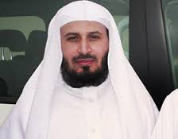

الشيخ العيون الكوشي إمام وخطيب بمسجد "الأندلس" في حي أناسي بمدينة الدار البيضاء.ولد بمدينة آسفي بالمغرب سنة 1967م. حفظ القرآن وعمره لا يتجاوز تسع سنوات,حصل على بكالوريا شعبة الآداب العصرية. تميز الشيخ بصوت شجي وخاشع في القراءة,و هو من كبار القراء المغاربة للقرآن الكريم برواية ورش عن نافع.
اقرأ المزيد
ناصر القطامي :
نـاصر القطـامي قارئ من قراء القرآن الكريم في المملكة العربية السعودية، وإمام وخطيب جامع خادم الحرمين الشريفين الملك عبدالله بن عبد العزيز ال سعود بالرياض. ولد في السعودية عام 1400 هـ 1980 م. ويعد من أشهر قراء منطقة الخليج والوطن العربي. متزوج ولديه ولدين و بنتين.
اقرأ المزيد
محمود خليل الحصري :
محمود خليل الحصري أحد أشهر قُرّاء القرآن الكريم في العالم الإسلامي، له العديد من المصاحف المسجلة بروايات مختلفة. وُلد في غرة ذي الحجة سنة 1335 هـ الموافق 17 سبتمبر من عام 1917 في قرية شبرا النملة التابعة لطنطا بمحافظة الغربية بمصر. كان والده قبل ولادته قد انتقل من محافظة الفيوم إلى هذه القرية التي ولد فيها. وهو قارئ قرآن مصري أجاد قراءة القرآن الكريم بالقراءات العشر.
اقرأ المزيد
عمر القزابري :
عمر القزابري (4 أغسطس 1974) إمام مسجد الحسن الثاني،تلقى القرآن في صغره على يد والده الشيخ أحمد القزابري وهو من علماء مراكش، وختم القرآن في سن 11 سنة، حصل على شهادة الثانوية العامة في التعليم الأصيل من مدرسة ابن يوسف بمراكش، توفي والده وترك فيه ألم عميق، جعله يسافر بعدها إلى السعودية حيث حضر دروسا بالمعهد الإسلامي بمكة المكرمة سنة 1997، وتولى إمامة مسجد الجامعة بجدة، تلقى خلال تلك الفترة القرآن على يد عدد من كبار المشايخ، منهم الشيخ محمود إسماعيل، من علماء الأزهر، والشيخ الفاه الموريتاني، قبل أن يعود إلى المغرب ويتولى الخطابة في مسجد باب الريان بحي الألفة بمدينة الدار البيضاء حيث كانت خطبه تستقطب آلاف المصلين، بعد ذلك قرر الشيخ عمر العودة إلى تعميق دراساته القرآنية، حيث أقام في القاهرة دورة دراسية لختم القراءات العشر على يد الشيخ أحمد عيسى المعصراوي، شيخ عموم القراء بمصر. والشيخ حاليا يشغل منصب إمام مسجد الحسن الثاني بالدارالبيضاء ويتولى أيضا الخطابة في مسجد النسيم بمدينة الدار البيضاء.
اقرأ المزيد
مشاري العفاسي :
مشاري بن راشد بن غريب بن محمد بن راشد العفاسي المطيري[1] إمام المسجد الكبير بدولة الكويت وخطيب في وزارة الأوقاف والشؤون الإسلامية بدولة الكويت، صاحب أول قناة إسلامية كويتية قناة العفاسي الفضائية. وقارئ القرآن الكريم ومنشد ديني كويتي. يتمتع بصوت عذب وقوة في التحكم بطبقات الصوت وروعة الأداء واتقان في أحكام التلاوة والتجويد والقراءات . له العديد من الإصدارات التي انتشرت في الوطن العربي والإسلامي والعالم.
اقرأ المزيد
سعد الغامدي :
هو الشيخ سعد بن سعيد بن سعد الغامدي، من مواليد مدينة الدمام بالمنطقة الشرقية من المملكة العربية السعودية. وهو متزوج من كريمة الشيخ سعد بن عمر الغامدي حفظه الله، ولديه أربعة من الأبناء الكرام. ويرجع الفضل في تربيتهِ ونشأتهِ بعد الله سبحانه وتعالى الى والده الشيخ سعيد بن سعد الغامدي حفظه الله ورعاه، الذي يعتبر أكثر شخصيه تأثر بها ولها وقعٌ جميل في حياته الأسرية والعلمية والعملية. أما والدته فهي من أشد الناس طيبةً واعتدالاً وحكمةً وقد تفانت في تربية أبنائها تربيةً صالحة. له من الإخوة أربعة وهم: محمد وأحمد والدكتور يوسف ( إمام وخطيب جامع العيسى بمدينة الدمام ) ومروان.
اقرأ المزيد
ماهر المعيقلي :

ماهر بن حمد بن معيقل المعيقلي البلوي ولد في 7 يناير 1969 وحفظ القرآن الكريم ودرس كلية المعلمين في المدينة المنورة وتخرج منها معلماً لمادة الرياضيات وانتقل للعمل بمكة المكرمة معلماَ ثم أصبح مرشداَ طلابياَ في مدرسة "الأمير عبد المجيد" بمكة المكرمة. حاصل على درجة الماجستير بتاريخ 1425 هـ في فقه الإمام أحمد بن حنبل في كلية الشريعة بجامعة أم القرى وحصل على درجة الدكتوراه في التفسير، ويعمل كأستاذ مساعد بقسم الدراسات القضائية بكلية الدراسات القضائية والأنظمة بجامعة أم القرى ويشغل منصب وكيل الكلية للدراسات العليا والبحث العلمي.[1]
حصل على الماجستير من جامعة أم القرى كلية الشريعة قسم الفقه في 1425 هـ وكانت الرسالة بعنوان: مسائل الإمام أحمد ابن حنبل الفقهية برواية عبد الملك الميموني (جمع ودراسة) وحصل فيها على تقدير ممتاز. وحصل على الدكتوراه من جامعة أم القرى سنة 1432 هـ وهي تحقيق كتاب (تحفة النبيه شرح التنبيه) في الحدود والأقضية (للإمام الشيرازي في الفقه الشافعي).
كذلك حصل على رسالة الدكتوراه وكانت بعنوان "تحفة النبيه في شرح التنبيه للزنكلوني الشافعي دراسة وتحقيقاً لباب الحدود والقضاء" ونوقشت الرسالة بقاعة الملك عبد العزيز. وحصل الشيخ الدكتور على درجة الدكتوراه في الفقه بتقدير ممتاز مع مرتبة الشرف الأولى الثلاثاء 28 المحرم 1434 من الهجرة 11 / 12 / 2012 وهو من أشهر القراء في العالم الإسلامي يتميز الشيخ بصوت جميل ورائع
اقرأ المزيد
عبد الباسط عبد الصمد :
عبد الباسط محمد عبد الصمد سليم داود (1927 - 30 نوفمبر 1988)، أحد أشهر قراء القرآن الكريم في العالم الإسلامي. ويتمتع الشيخ عبد الباسط بشعبية هي الأكبر في أنحاء العالم لجمال صوته ولأسلوبه الفريد. وقد لُقب بالحنجرة الذهبية وصوت مكة. ولد سنة 1927 بقرية المراعزة في محافظة قنا. حفظ القرآن الكريم على يد الشيخ محمد الأمير شيخ كتاب قريته. أخذ القراءات على يد الشيخ المتقن محمد سليم حمادة. دخل الإذاعة المصرية سنة 1951، وكانت أول تلاواته من سورة فاطر. عين قارئاً لمسجد الإمام الشافعي سنة 1952، ثم لمسجد الإمام الحسين سنة 1958 خلفاً للشيخ محمود علي البنا . ترك للإذاعة ثروة من التسجيلات إلى جانب المصحفين المرتل والمجود ومصاحف مرتلة لبلدان عربية وإسلامية. جاب بلاد العالم سفيراً لكتاب الله، وكان أول نقيب لقراء مصر سنة 1984، وتوفي في 30 نوفمبر 1988.
اقرأ المزيد